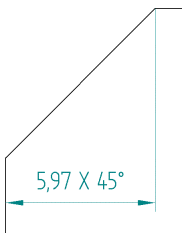
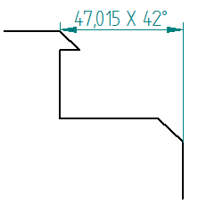

Chamfer Dimension command
You can use the Chamfer Dimension command to place a dimension on a chamfer by selecting two lines:
Example:

You also can place a dimension between two chamfered faces by selecting two keypoints. Press and hold the Shift key to measure the distance from one key point to another.
Example:

The first value in the chamfer dimension is the chamfer line length. The second value in the chamfer dimension is the angle between the second line and the horizontal axis relative to the first line.